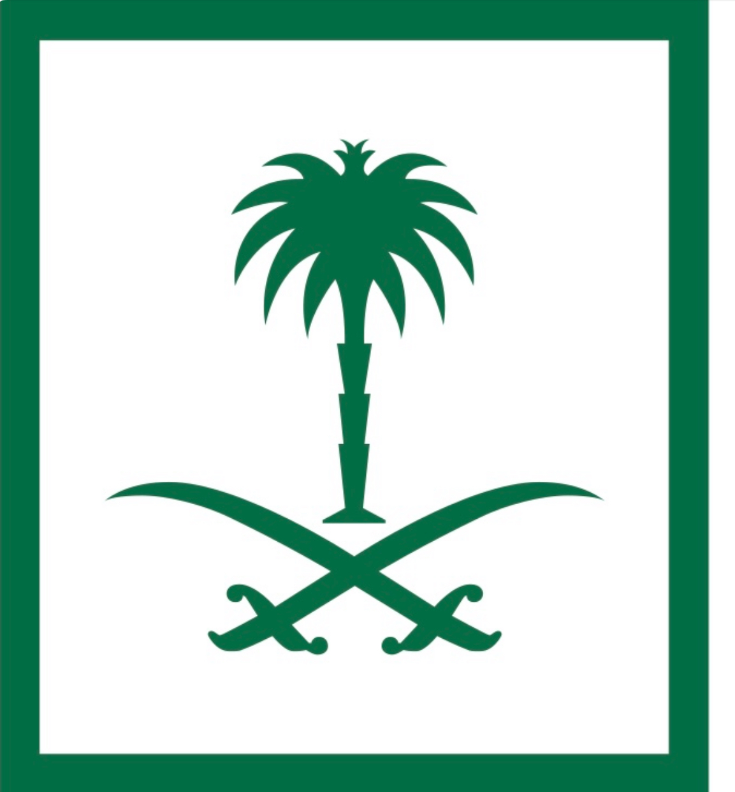

البنية التحتية هي الأساس اللي تعتمد عليه كل الخدمات التقنية. أي نظام، سواء داخلي أو خارجي، لازم يمر بالبنية التحتية. حتى لو الخدمة مستضافة خارج الوزارة، نحتاج نفعّل لها الراوترات، السويتشات، والجدران النارية.
مكوناتها الرئيسية:
1. Network
2. Security
3. Infra
أمثلة:
• البريد الإلكتروني (تصفية، نسخ احتياطي)
• Active Directory (التحكم بالصلاحيات)
• غرفة الطوارئ (Disaster Recovery)
• Multi-cloud (علي بابا، ديم، سداد)
• مركز البيانات (Data Center)
الشبكة توصل الأنظمة والخدمات داخل الوزارة. تنقل البيانات بين الموظفين والأنظمة والجهات الخارجية بأمان وسرعة.
أقسام الشبكة:
• LAN: تربط أجهزة مبنى الوزارة
• WAN: تربط فروع الوزارة والجهات الخارجية
• DMZ: للأنظمة اللي تتواصل مع الإنترنت، تشمل أدوات مثل Proxy, DLP, FireEye, Email Filtering
نقاط الوصول:
توفر واي فاي، وبعضها يكشف الأجهزة الغريبة.
الحماية:
• Proxy لتصفية التصفح
• مزودي إنترنت متعددين (STC، موبايلي) لضمان الاستمرارية
الأمن السيبراني يحمي كل أجزاء التقنية من التهديدات. هدفه تحقيق: السرية (Confidentiality)، السلامة (Integrity)، التوفر (Availability).
أنواع الحماية:
1. وقائي (مثل الجدران النارية)
2. كاشف (مثل SIEM)
3. تصحيحي (استرجاع النسخ الاحتياطية)
4. تعويضي (مثل MFA البديلة)
أمثلة:
• فحص الرسائل قبل استلامها
• MDM وMAM للتحكم في أجهزة وتطبيقات الموظفين
• Endpoint Security مثل Symantec وEDR لعزل أي تهديد مباشرة